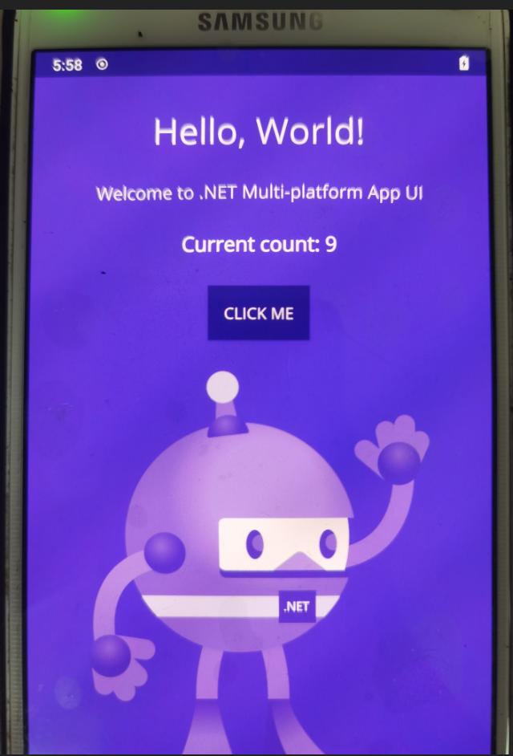

maui初体验
因为主攻的不是java，Eclipse这个IDE也用着不习惯，没有Visual
Studio用着顺手，所以呢，开发一个android
app或者弄个demo就变成了奢望（虽然也用java弄过一个）……因为一直对移动端应用不死心，一直留意着这方面的信息，出现好多迂回策略，像什么：
Apache Cordova
Phonegap
Ionic
等,还有国内的正益无线。也写过一些对应的demo，但是觉得有些麻烦，弄个环境就挺费劲，其次就是调用原生，严重依赖插件，还有就是新能问题了（这个说的有点远了），觉得唯一的好处就是使用web前端的东西……直到后来了解到了
Xamarin，有Xamarin.Android
Xamarin.IOS
和Xamarin Forms，具说接近原生的速度，关键是可以用C#
写，感觉很牛逼，开始都是用Xamarin.Android
，但是后来觉得怎么着也是写，要不用Xamarin Forms？嗯，就用它。再到后来就有了React Native
Weex等，还有就是最近很火的Flutter，自己也弄了个Flutter
的demo，可能是我先入为主也可能我是外行，感觉他的开发体验太差了……最近Flutter
也支持Web了，感觉这是要全能啊！这里不得不说一下Uno
Platform，这个是从同学那里了解到的，感觉这个就更牛逼了，感觉就是everywhere。
相对于Flutter的大火，觉得Xamarin就太那啥了，甚至好多人都不知道C#
还可以开发android、ios的app😓😓😓。
虽然这样，我还在一直坚守着……Xamarin Forms还没有学的怎么样呢？又出现了MAUI
，说是下一代。虐我千百遍啊，我还是我，我等着……她终于来了，记得.net第一个预览版的时候不支持maui
；第二版就开始支持了，便开始折腾了，但是一直没有搞定；直到第三个预览版，有了检测工具maui-check
，在他的帮助之下，我的demo跑通了，于是就是准备写笔记记录一下，还没有写，下一个版本就来了；直到写这个笔记的时候已经是预览版6了……
我去，又说了一大推废话，关键是想记录一下我的历程，下面赶紧进入正题。
.NET SDKs和.NET Runtimes
先看一下安装的.NET SDKs和.NET Runtimes，最近.NET CLI确实是用的比较多，当然也很方便。更多你可以去官网看看：.NET CLI | Microsoft Docs
打印出已安装的 .NET SDK 的列表
> dotnet --list-sdks
打印出已安装的 .NET 运行时的列表
> dotnet --list-runtimes
同时打印.NET SDKs和.NET Runtimes
> dotnet sdk check
.NET SDK和.NET 运行时列出里一大堆，各个版本的都有，怎么删除呢？如下：
maui-check相关
maui-check是一个.net maui
检查工具，帮助我们检查依赖的环境，如果没有，你可以选择安装，这样就不用去找安装包了。.net maui所依赖的环境有很多，这里也没有完全利用它。因为之前弄过
Xamarin Forms，所以一些开发android的环境已经安装好了。这里只是用来安装一些.net maui
的依赖。更多你可以去官网看看：GitHub -
Redth/dotnet-maui-check: .NET MAUI Check tool
- 安装maui-check
-
> dotnet tool install -g redth.net.maui.check
- 更新maui-check
-
> dotnet tool update -g redth.net.maui.check
.net maui模板相关
弄好依赖之后，我们看一下对应的模板，创建一个项目，我们需要他。看一下已经安装的模板：
> dotnet new --list
> dotnet new -l
如果没有maui模板，可以自己安装。安装和管理 SDK 模板 - .NET Core | Microsoft Docs
- 安装/更新Maui模板
-
> dotnet new --install Microsoft.Maui.Templates::6.0.100-preview.6.1003
-
> dotnet new -i Microsoft.Maui.Templates::6.0.100-preview.6.1003
创建项目
使用命令创建
忘了从哪个预览版开始就是开始支持Visual Studio了，但是得是2022，还是预览版……算了，还是用.NET CLI
创建吧！
> dotnet new maui -n demo1
如果提示安装的maui模板不是最新版，可以根据提示或者上面的章节目录中的命令更新maui模板。
查看目录结构
> tree /f >tree.txt
这里查看目录结构的目的是留痕，稍后会删改模板文件
阉割项目
记得之前创建模板是没有sln解决方案，也证实了开始不支持Visual Studio
，因为没有安装2022，还有就是只面向Android，所以修改一下模板项目。
- 将项目目录下的非“demo1”文件夹删除，只保留“demo1”文件夹
- 将保留的“demo1”文件夹中“Platforms”文件夹中的“IOS”和“MacCatalyst”文件夹删掉
- 将保留的“demo1”文件夹中的内容剪切到项目根目录下并将“demo1”文件夹删掉
- 修改项目工程文件(.csproj),删除“IOS”和“MacCatalyst”相关的配置
还原项目
模板项目阉割之后，试试能不能跑起来。以试，还真不行，报错了，提示工作负载（workload）没有安装全。之后就是按照错误提示安装了一下
> dotnet restore
> dotnet workload install maui-core
这个还有权限问题，需要管理员权限，这里又开了一个窗口
安装成功之后，再看一下工作负载和还原项目就没有问题了。
真机调试
项目还原成功了，之后就真机调试了。首先将手机连接好，你可以使用下面的命令查看：
> adb devices
设备连接正常之后就是启动项目了：
> dotnet build -t:Run -f net6.0-android
果然一切都不是那么顺利，又报错了
Mono.AndroidTools.IncompatibleCpuAbiExceptiopn: The package does not support the CPU architecture of this
device.
随后就搜索了一下：
上面的两个连接感觉和maui对不上号，猜测应该是针对xamarin
的，参照第三个连接，修改*.csproj项目工程文件，添加上就没有问题了。
android-arm;android-arm64;

参考链接
2021-10-13 更新：.net 6 rc2